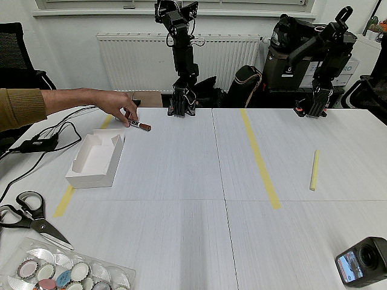
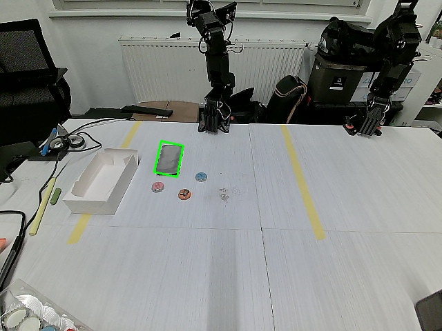
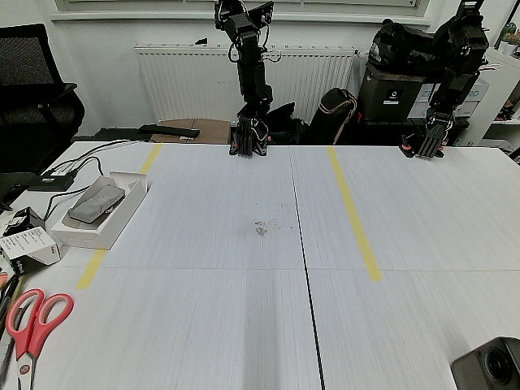
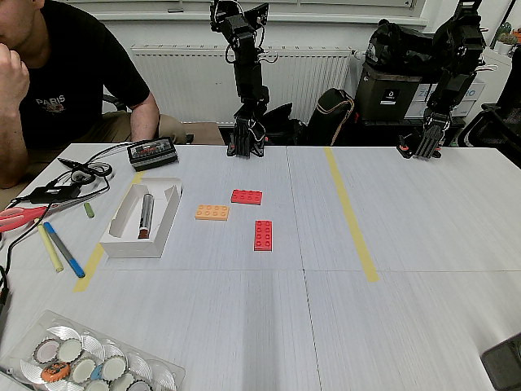
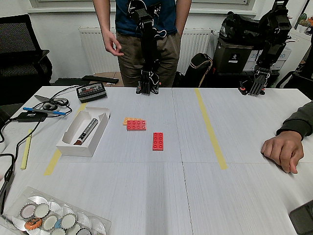

Highlight reel (316 s): title cards + the best runs and the key failures, trimmed and sped up.
Real-robot runs in this gallery40runs
12success
7partial
20failure
Each badge says who decided: user = the person at the table said so; judged from video = no human verdict was recorded, so the end frames were checked by eye for this page. The OUTCOME.json files of the datasets were not changed.
Edits: idle start/end trimmed, idle gaps longer than 3 s cut (marked in the video), long clips sped up (marked). The burned-in t = ... clock still shows the original timing. Every card links to its untouched original.
The task
A person shows the whole tissue-pack task once: open the cap, pull a tissue, clear the coffee beans.
Reference: a person does the task by hand
Reference demo verdict: human demo
Recorded with the table camera (15 fps): the person opens the cap, pulls a tissue and sweeps the beans. This is the goal the robot works towards.
Original 56 s → 31 s: start 8 s / end 0 s trimmed, 3 idle gaps cut (17 s) ·
original fileMarker into the white box
Teleoperated demos first, then the first autonomous run (camera + vision model + kinematics).
Teleop demo take 2: marker into the box
Success verdict: labelled (run/demos/episodes.json)
A person moves the leader arm, the follower copies it. The marker ends inside the white box. LeRobot episode 0, the good training episode.
Teleop demo take 1: placed wrongly
Failure verdict: labelled (run/demos/episodes.json)
Same task, the operator placed the marker wrongly. Kept as a labelled failure example (episode 1), not trained on as a success.
Original 132 s → 35 s: 3 idle gaps cut (28 s), 3x speed ·
original fileFirst autonomous run: the arm pushed the box
Failure, explained and fixed verdict: documented (docs/HANDOVER.md)
The table mapping had x mirrored relative to the kinematics, so each visual correction moved the arm further the wrong way and the jaws pushed the box about 12 cm. Found and fixed the same evening (tip-based calibration).
Original 52 s → 13 s: start 24 s / end 7 s trimmed, 2 idle gaps cut (9 s) ·
original file Photo (not filmed)
Photo (not filmed)Autonomous pen run (not filmed): pen in the box, model check + photo.
 Photo (not filmed)
Photo (not filmed)Thin blue pen: held with a firmer grip (1397 ticks), placed across the box.

Photo (not filmed)Retry loop: placed in the box; a hand takes it out to reset.
Magnetic duster collects metal caps
Grasp the duster, hold it over each cap without pressing, then drop it into the box.
Duster grasped first try, both caps taken, into the box
Success (judged from video) verdict: judged from video
Grasp on the first try (1888 ticks, 318 mA), held over each of the 2 caps with no pressing, camera check: 0 caps left on the table, then released into the white box. Matches the 'final run' in docs/RESULTS.md. Not confirmed by the human in OUTCOME.json.
Original 43 s → 28 s: start 1 s / end 0 s trimmed, 1.5x speed ·
original fileDuster run: only one of two caps taken
Failure (user) verdict: user
User: not successful, only one of the two caps was taken, the other stayed on the table. The detector had seen only 1 cap.
Original 49 s → 28 s: start 5 s / end 1 s trimmed, 1.5x speed ·
original fileDuster run: grasp on the third try, stopped before the box
Failure (user) verdict: user
User: not both caps taken, duster not placed in the box (run stopped before the bin). Two empty closes (1324 ticks, 0 mA) before a hold on try 3.
Original 110 s → 34 s: 3 idle gaps cut (40 s), 2x speed ·
original fileDuster run (8 fps recorder)
Partial (judged from video) verdict: judged from video
Duster grasped and carried into the box; a small object, probably one cap, seems to remain on the table. No log for this recording.
Original 32 s → 28 s: start 0 s / end 1 s trimmed, 1 idle gap cut (3 s) ·
original fileDuster session, 6 minutes (8 fps recorder)
Raw session verdict: raw session
Several duster attempts and resets in one long recording, no log. Trimmed and sped up here.
Original 368 s → 34 s: start 0 s / end 3 s trimmed, 14 idle gaps cut (244 s), 3.5x speed ·
original file
Photo (not filmed)Colour/shape detection of the duster (green) and the caps (magenta).

Photo (not filmed)Final photo of the successful run: duster in the box, both caps gone from the table (on the magnet underneath).
LEGO / Duplo stacking (photos only, not finished)
One run placed the brick perfectly, then a press knocked it off; later runs were 1.5-4 cm off.

Photo (not filmed)The task: put a red Duplo brick on the yellow one.
 Photo (not filmed)
Photo (not filmed)Colour detection: position and angle of each brick in milliseconds.

Photo (not filmed)Attempt: on the yellow brick but off-centre (1.5-4 cm table-level error). Not finished.
Tissue pack: open the flip-top cap
Pushing failed, a hand-guided demo worked, its replay half-worked, a sideways sweep opened it autonomously.
Pushing the lid: the vision model said 'open', it was closed
Failure (user) verdict: user
The lid was still closed in a clean photo; the vision model's 'open: true' was a false positive because the arm hid the lid. Lesson: never trust a model yes/no for physical success.
Pushing the lid: pressed down instead of lifting
Failure verdict: user (note)
Lid stayed closed; the closed gripper pressed down on the pack and nudged it. User: wrong, the lid must be opened upward, not pressed down.
Original 22 s → 21 s: start 0 s / end 1 s trimmed ·
original fileHand-guided demo: the lid opened by a sideways lift
Success (user) verdict: user
Torque off, a person moves the follower arm by hand while it records. The flip-top lid ends open with the tissue visible. No leader arm needed.
Robot replays the hand demo: lid semi-open
Success (user: okay, semi-open) verdict: user
Replay at 0.8x of the recorded demo with lag and current watchdogs. The pack was about 2 cm right of the demo position: the lid ended semi-open. Marked success with 'not a full open'.
Original 54 s → 22 s: start 2 s / end 16 s trimmed, 2 idle gaps cut (14 s) ·
original fileStepped-down sweeps: cap stayed closed
Failure (user) verdict: user
Cap stayed closed; the sweep path drifted about 5 cm forward instead of sideways and the tip was judged too deep.
Sweep from the top, 3 attempts: cap stayed closed
Failure (user) verdict: user
Cap stayed closed after 3 sweeps (z 0.072-0.080); the path drifted forward and the tip was too deep.
Original 100 s → 35 s: start 1 s / end 2 s trimmed, 2 idle gaps cut (8 s), 2.5x speed ·
original fileSweep from the top: stopped during attempt 2
Failure (judged) verdict: judged from log + video
The camera reported the cap still closed after attempt 1; the run ended during attempt 2.
Original 34 s → 30 s: start 1 s / end 0 s trimmed, 1 idle gap cut (4 s) ·
original fileSweep from the top, 3 attempts: cap would not open
Failure (judged from video) verdict: judged from video
Three sweeps at z 0.078/0.074/0.070; the cap is closed in the final frame and the script gave up.
Original 58 s → 33 s: start 3 s / end 0 s trimmed, 2 idle gaps cut (6 s), 1.5x speed ·
original fileAutonomous sideways sweep opens the cap
Success (user) verdict: user
The cap was opened autonomously by the sideways sweep (attempt 3, tip z 0.081). The tissue was then pulled out by hand-commanded steps, not by the script.
Original 67 s → 38 s: start 1 s / end 0 s trimmed, 3 idle gaps cut (10 s), 1.5x speed ·
original filePinch and pull one tissue
Too deep lifts the whole pack; a thin sheet does not stall the gripper, so only the camera can confirm.
Gripped too deep: lifted the whole pack
Failure (user) verdict: user
Grasp at z 0.052 closed on the pack itself (1399 ticks, 46 mA) and lifted it. The script's own 'DONE - tissue pulled' was wrong. User: pick from the top, at the tip.
Three pinches at the tip: all closed on nothing
Failure (user) verdict: user
Pack put down first; 3 pinch tries (z 0.068/0.074/0.080) closed on nothing (1325-1340 ticks, under 5 mA); the pack was twisted and the lid closed afterwards.
Hand-guided pinch demo: no tissue in the jaws
Failure (judged from video) verdict: judged from video
The robot's one close ended at 1326 ticks / 0 mA (nothing between the jaws). At the end a person picks up a loose tissue from the table.
Original 74 s → 24 s: start 10 s / end 13 s trimmed, 3 idle gaps cut (26 s) ·
original fileTissue pinched at the tip and pulled straight up
Success verdict: OUTCOME.json (photos)
Jaws lowered a little onto the tissue (tip z 0.076 at the true pack position), closed, pulled straight up; the photos show a tissue lifted out and carried to the home position, then released. The close read 1334 ticks / 2 mA: a thin sheet does not stall the gripper.
Original 42 s → 20 s: start 3 s / end 0 s trimmed, 1 idle gap cut (19 s) ·
original fileClear the coffee beans
Wiping with the tissue spreads the beans; lanes clear the box; pushing the whole pack through them works best.
Wipe with the tissue: beans spread into a streak
Failure (judged) verdict: judged (photos + note)
One pass with the tissue held in the gripper spread the beans into a diagonal streak; about 16 beans left.
Three wipe passes: more bean pixels after than before
Failure (judged) verdict: judged (log)
Dark bean pixels in the bean box went from 355 to 716-763: the wipes spread the beans instead of clearing them.
L-shaped sweeps: a few beans moved
Partial (judged from video) verdict: judged from video
Three L sweeps took the bean box from 397 to 319 dark pixels; most beans are still there in the video.
Vacuum-pattern lanes: the bean box is cleared
Partial (judged from video) verdict: judged from video
Five lanes, each stroke toward image-left with lifted returns: the bean box went from 312 to 15 dark pixels, but the beans were pushed out of the box and scattered to the side rather than collected.
One more lane: 195 to 140 bean pixels
Partial (judged) verdict: judged (log)
A single extra lane over the remaining beans moved a few of them.
Push the whole pack through the beans in one stroke
Success (user: 'love this one') verdict: user
The closed gripper at the tissue case's left corner pushed the whole case 21 cm sideways through the grouped beans. The beans ended against the case's side; the user said the intention is clear and one more push would clear them. Saved as a demo.
Original 27 s → 24 s: start 3 s / end 0 s trimmed ·
original fileThe whole tissue task in one run
Cap, tissue and beans chained, with camera checks and retries at each stage.
Fast full run: cap not opened, stopped at the beans
Failure (user) verdict: user
Cap swept but not opened; the tissue close read empty; stopped at the first bean lane (IK cannot reach).
Retry loop: no tissue after three pinches
Failure (judged from video) verdict: judged from video
A person's hand touches the pack during the cap stage; then three tissue pinches (z 0.092/0.086/0.080) found nothing and the run ended.
Original 55 s → 34 s: 1 idle gap cut (3 s), 1.5x speed ·
original fileRetry loop: cap not confirmed open
Failure (judged from video) verdict: judged from video
Two sweeps changed the picture too little (5.1 and 7.1, open needs more than 9); the run ended at the first tissue attempt.
Guided session: cap opened and one tissue pulled
Success (user) verdict: user
The human gives short chat commands, the arm executes them: cap opened with a sideways sweep at one height, then one tissue pinched and pulled straight up. The bean lanes at the end missed the pile and are not part of the success.
Original 224 s → 38 s: start 14 s / end 26 s trimmed, 3 idle gaps cut (126 s), 1.5x speed ·
original fileAutonomous: cap open and tissue out on the first try
Success, cap + tissue (judged from video) verdict: judged from video
One sweep at tip z 0.103 opened the cap (picture change 26.9), the first pinch took a tissue and pulled it straight up and out; the video shows the tissue out of the pack. No bean cluster was detected, so the bean stage did not run.
Autonomous with retries: cap on try 2, tissue on try 3
Partial (judged from video) verdict: judged from video
The cap opened on the second sweep; two pinches found nothing (the camera check caught it and retried), the third was reported held and pulled. In the final frame the tissue is raised but not clearly out of the pack.
Original 54 s → 31 s: 2 idle gaps cut (8 s), 1.5x speed ·
original fileAutonomous: cap + tissue, then the bean lanes pushed the pack
Partial (judged from video) verdict: judged from video
Cap opened and a tissue was pulled up; during the 8 bean lanes the pack was pushed into the beans and a person stepped in.
Wooden spoon scoops coffee beans into the cup
24-episode 30 fps LeRobot v3 teleop dataset (table + wrist cameras), plus shifted demo-matching and autonomous runs.
Teleop demo (30 fps): scoop beans into the black cup
Success (user) verdict: user (EPISODE_LABELS.json)
Clean 30.0 fps LeRobot v3 teleop episode (0 stale frames): follower grasps the wooden spoon from the bowl, scoops coffee beans, carries them to the black cup and pours them in. Part of the 24-episode spoon_beans_v1 dataset.
Teleop demo take 2 (30 fps): scoop and pour
Success (user) verdict: user (EPISODE_LABELS.json)
Second user-confirmed 30.0 fps teleop training episode (0 stale frames, 41.6 s): clean handle grasp, scoop and pour into the black cup.
Teleop demo take 3 (30 fps): scoop and pour
Success (user) verdict: user (EPISODE_LABELS.json)
Third user-confirmed 30.0 fps teleop training episode (0 stale frames, 49.1 s).
Original 49 s → 28 s: 2 idle gaps cut (7 s), 1.5x speed ·
original fileShifted demo match: grasps spork and carries beans
Partial (judged from video) verdict: judged from video
Measured handle in camera, shifted demo ep4 by [+7, +4, -3] cm, grasped under load (1355 ticks, 97 mA), scooped beans from the bowl and carried them to the black cup (~10 beans + spork dropped beside the cup rim).
Original 151 s → 37 s: start 1 s / end 1 s trimmed, 4x speed ·
original fileAutonomous alignment: closed without lifting spoon
Failure (judged from video) verdict: judged from video
Vision aligned above the handle, but the jaws closed without lifting the wooden spoon out of the bowl and ran the pour motion empty.
Original 368 s → 35 s: start 277 s / end 0 s trimmed, 1 idle gap cut (20 s), 2x speed ·
original fileSingle-shot 0.8x trajectory replay
Missed handle (judged from video) verdict: judged from video
Blind 0.8x replay of a recorded trajectory; the bowl/spoon position differed slightly from the demo so the spoon stayed in the bowl.
Original 68 s → 33 s: start 2 s / end 1 s trimmed, 2x speed ·
original fileSimulation twin & RL policies (MuJoCo)
Calibrated 8-servo twin: 100-trial cup pick benchmark (94%) and 30 Hz PPO sideways JOOLA bat ball balancing (93.3% camera) & dribbling.
Sim: autonomous cup pick & 3s hold (94/100)
Success (sim, 94%) verdict: simulation
Calibrated MuJoCo 3.2.7 twin with +-3 cm mapping noise removed by 2-step wrist-camera 3D ray-plane alignment (4.96 mm median error).
Sim: 30 Hz PPO JOOLA bat balance (93.3% cam)
Success (sim, 93.3% cam) verdict: simulation
Matched 1:1 to the real sideways JOOLA bat grip (gripper=0.341); calibration-free red-ellipse + ball front-camera tracker + FdVel3D under 0-100 ms lag.
Sim: 30 Hz PPO JOOLA bat dribbling (max 22)
Simulation (max 22 bounces) verdict: simulation
Warm-started from the balance policy with hollow-shell ball inertia, air drag, and min_rise >= 3.5 cm anti-buzz gating.
Simulation failure, trial 6
Failure (sim) verdict: simulation
One of the failed trials of the 100-trial benchmark.
Simulation failure, trial 7
Failure (sim) verdict: simulation
One of the failed trials of the 100-trial benchmark.
Simulation failure, trial 11
Failure (sim) verdict: simulation
One of the failed trials of the 100-trial benchmark.
Simulation failure, trial 34
Failure (sim) verdict: simulation
One of the failed trials of the 100-trial benchmark.
Simulation failure, trial 47
Failure (sim) verdict: simulation
One of the failed trials of the 100-trial benchmark.
Simulation failure, trial 49
Failure (sim) verdict: simulation
One of the failed trials of the 100-trial benchmark.
Simulation failure, trial 53
Failure (sim) verdict: simulation
One of the failed trials of the 100-trial benchmark.
Simulation failure, trial 72
Failure (sim) verdict: simulation
One of the failed trials of the 100-trial benchmark.
Simulation failure, trial 84
Failure (sim) verdict: simulation
One of the failed trials of the 100-trial benchmark.
Simulation failure, trial 85
Failure (sim) verdict: simulation
One of the failed trials of the 100-trial benchmark.
Appendix: not finished, empty or duplicate recordings
Kept for completeness. Not in the slide deck or the highlight reel.
Scissors: hand-taught orientation (1)
Task not finished verdict: not finished
Hand-guided soft-hold session to show the scissors orientation. The tape cut was never made.
Original 144 s → 40 s: start 9 s / end 0 s trimmed, 6 idle gaps cut (36 s), 2.5x speed ·
original fileScissors: hand-taught orientation (2)
Task not finished verdict: not finished
Second soft-hold session for the scissors.
Scissors: lift, 10 open/close cycles, move toward the boxes
Task not finished verdict: not finished
Guided session: the arm lifted the scissors level, ran 10 open/close cycles (every close stalled on the scissors loops, 1625-1764 ticks), then moved toward the tape between the boxes, where the shoulder could not hold the height. Video capped at 400 s by the recorder.
Original 396 s → 37 s: start 3 s / end 0 s trimmed, 7 idle gaps cut (299 s), 2.5x speed ·
original fileScissors: cutting pose taught by hand
Task not finished verdict: not finished
The cutting pose was saved while the person held the arm (run/scissors_cut_pose.json). After release the arm sagged about 2 cm.
Original 90 s → 11 s: start 4 s / end 38 s trimmed, 1 idle gap cut (37 s) ·
original fileScissors: back to the taught pose, the scissors slipped out
Not finished (scissors slipped out) verdict: observed
Small goal pushes brought the tip from 11.1 to 12.5 cm; the scissors, resting in open jaws, slipped out during the lift. The arm was then parked. Video capped at 400 s by the recorder.
Original 396 s → 8 s: start 104 s / end 91 s trimmed, 3 idle gaps cut (193 s) ·
original fileBean wipe run: only the caption-free copy survived
No log verdict: no log
The captioned file of this run is incomplete (recorder killed); the caption-free copy plays. Timing assumes 20 fps.
Original 22 s → 20 s: start 0 s / end 2 s trimmed ·
original fileEmpty 4-second guided session
Empty verdict: empty
The session was stopped right after it started.
Empty 4-second guided session
Empty verdict: empty
The session was stopped right after it started.
Marker run aborted after 4 s
Aborted (exit code 1) verdict: recorder meta
Second marker attempt that evening; the script exited after 4 s.
Marker run aborted after 6 s
Aborted (exit code 1) verdict: recorder meta
Third marker attempt that evening; the script exited after 6 s.
Files that are not shown
Nothing was deleted. These exist on disk but cannot be played, or are copies of videos above.
results/films/tempo_wipe_beans_with_tissue_20261122_023920.mp4: file incomplete (moov atom missing, the recorder was killed); the _nocaption copy plays and is in the appendixresults/films/tempo_wipe_beans_with_tissue_20261122_024824_nocaption.mp4: file incomplete (moov atom missing); no captioned versionresults/films/tempo_open_and_pull_autonomous_20261122_020404_raw.mp4 and _nocaption.mp4: files incomplete (moov atom missing, the recorder was killed); only the joints file is usablerun/recordings/20261122_012800_demo1/front.mp4: file incomplete (no frames, no meta.json)run/recordings/20261121_205828_teleop_pick1/front.mp4 = demo_backup/teleop_pick1_failure.mp4run/recordings/20261121_210046_teleop_pick2/front.mp4 = demo_backup/teleop_pick2_success.mp4showcase/videos/* = copies made by scripts/build_showcase.pydatasets/*/videos/* = LeRobot episode videos (caption-free, 30 fps) of the films above
Built by scripts/presentation_edit.py (edits, posters, reel) and scripts/build_presentation.py (pages) from presentation/catalog.json.